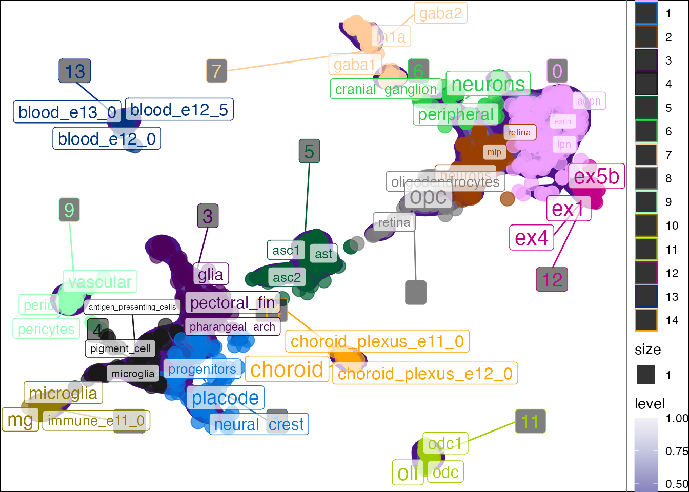
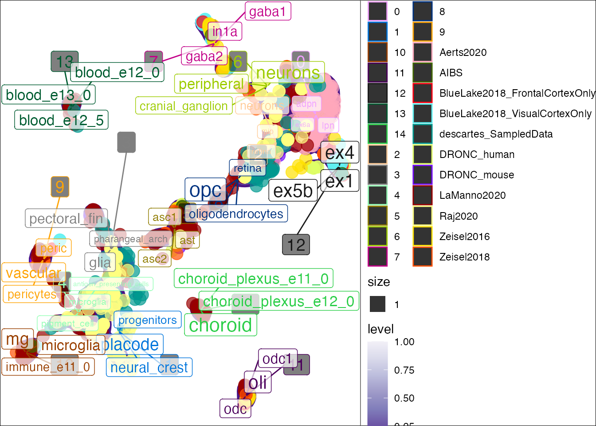
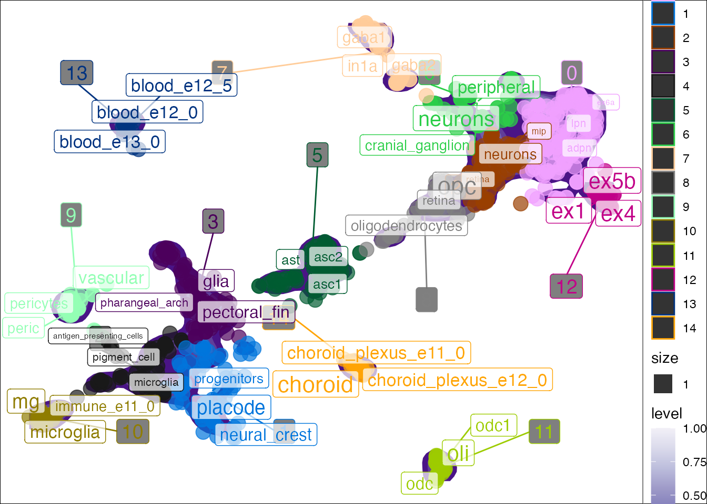
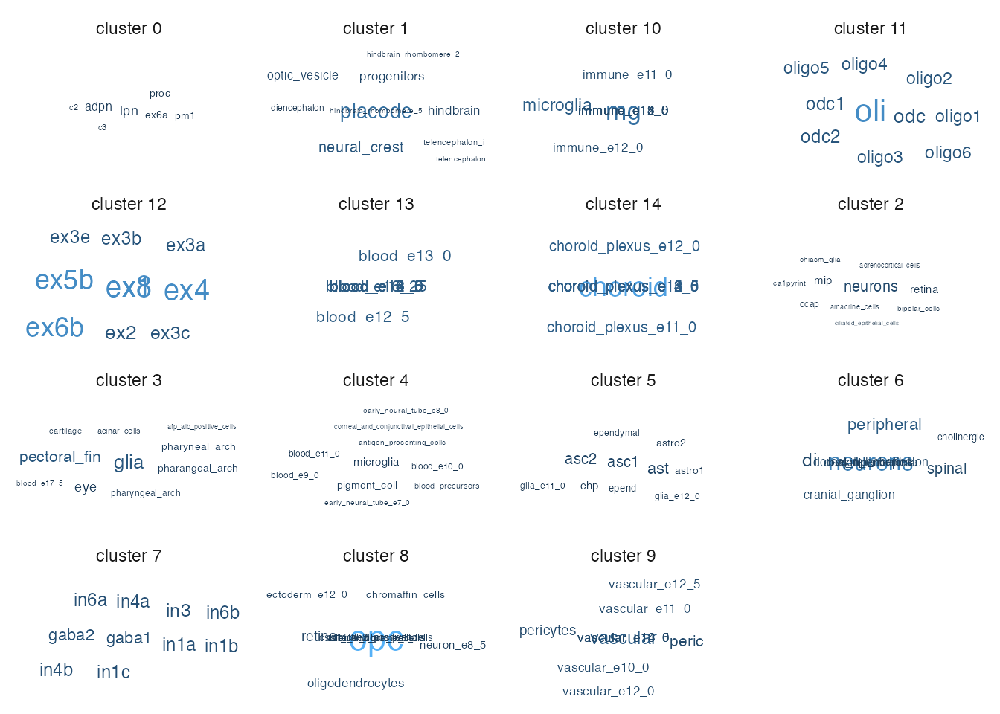

vignettes/tf-idf.Rmd
tf-idf.RmdTerm frequency–inverse document frequency (tf-idf) is an NLP technique to identify words or phrases that are enriched in one document relative to some other larger set of documents.
In our case, our words are within the non-standardized cell labels and our “documents” are the clusters. The goals is to find words that are enriched in each cluster relative to all the other clusters. This can be thought of as an NLP equivalent of finding gene markers for each cluster.
seurat_tfidf will run tf-idf on each cluster and put the results in the enriched_words and tf_idf cols of the meta.data.
pseudo_seurat_tfidf <- run_tfidf(object = pseudo_seurat,
reduction = "UMAP",
cluster_var = "cluster",
label_var = "celltype") ## Loading required package: SeuratObject## [1] "+ Extracting data from Seurat object."
## [1] "+ Using reduction: umap"## Joining, by = "word"## Joining, by = "cluster"
## Joining, by = "cluster"
head(pseudo_seurat_tfidf@meta.data)## cluster batch species dataset celltype label
## human.DRONC_human.ASC1 5 DRONC_human human DRONC_human ASC1 ASC1
## human.DRONC_human.ASC2 5 DRONC_human human DRONC_human ASC2 ASC2
## human.DRONC_human.END 9 DRONC_mouse mouse DRONC_mouse END END
## human.DRONC_human.exCA1 0 DRONC_human human DRONC_human exCA1 exCA1
## human.DRONC_human.exCA3 0 DRONC_human human DRONC_human exCA3 exCA3
## human.DRONC_human.exDG 0 DRONC_human human DRONC_human exDG exDG
## nCount_RNA nFeature_RNA RNA_snn_res.0.8 seurat_clusters
## human.DRONC_human.ASC1 237.9283 671 5 5
## human.DRONC_human.ASC2 232.7748 638 5 5
## human.DRONC_human.END 288.9631 616 9 9
## human.DRONC_human.exCA1 245.1858 669 0 0
## human.DRONC_human.exCA3 225.1575 675 0 0
## human.DRONC_human.exDG 237.8823 678 0 0
## UMAP_1 UMAP_2 enriched_words
## human.DRONC_human.ASC1 -0.4796632 0.17629431 asc1; asc2; ast
## human.DRONC_human.ASC2 -0.6386602 -0.05231967 asc1; asc2; ast
## human.DRONC_human.END -7.7066403 -1.84134831 vascular; peric; pericytes
## human.DRONC_human.exCA1 6.2326443 1.51104526 lpn; adpn; ex6a
## human.DRONC_human.exCA3 6.0303471 1.47096417 lpn; adpn; ex6a
## human.DRONC_human.exDG 5.9316036 1.49563257 lpn; adpn; ex6a
## tf_idf
## human.DRONC_human.ASC1 0.0917983119017698
## human.DRONC_human.ASC2 0.0917983119017698
## human.DRONC_human.END 0.154992540041713; 0.10415577696547
## human.DRONC_human.exCA1 0.0644773857405288; 0.06396517525531; 0.0429849238270192
## human.DRONC_human.exCA3 0.0644773857405288; 0.06396517525531; 0.0429849238270192
## human.DRONC_human.exDG 0.0644773857405288; 0.06396517525531; 0.0429849238270192You can also plot the results in reduced dimensional space (e.g. UMAP). plot_tfidf() will produce a list with three items. - data: The processed data used to create the plot. - tfidf_df: The full per-cluster TF-IDF enrichment results. - plot: The ggplot.
Seurat input
res <- plot_tfidf(object = pseudo_seurat,
label_var = "celltype",
cluster_var = "cluster",
show_plot = T)## [1] "+ Extracting data from Seurat object."
## [1] "+ Using reduction: umap"## Joining, by = "word"## Joining, by = "cluster"
## Joining, by = "cluster"## Warning: Ignoring unknown aesthetics: label
You can color the point by other metadata attributes instead.
res <- plot_tfidf(object = pseudo_seurat,
label_var = "celltype",
cluster_var = "cluster",
color_var = "batch",
show_plot = T)## [1] "+ Extracting data from Seurat object."
## [1] "+ Using reduction: umap"## Joining, by = "word"## Joining, by = "cluster"
## Joining, by = "cluster"## Warning: Ignoring unknown aesthetics: label
SingleCellExperiment inputplot_tfidf() can also take in an object of class SingleCellExperiment.
data("pseudo_sce")
res <- plot_tfidf(object = pseudo_sce,
label_var = "celltype",
cluster_var = "cluster",
show_plot = T)list inputLastly, if your data doesn’t fit the above example data types, you can simply supply a named list with metadata and embeddings.
data_list <- list(metadata = SingleCellExperiment::colData(pseudo_sce),
embeddings = SingleCellExperiment::colData(pseudo_sce)[,c("UMAP.1","UMAP.2")])
res <- plot_tfidf(object = data_list,
label_var = "celltype",
cluster_var = "cluster",
show_plot = T)## [1] "+ Using data from list."## Joining, by = "word"## Joining, by = "cluster"
## Joining, by = "cluster"## Warning: Ignoring unknown aesthetics: label
You can also create an interactive version of this plot.
res <- plot_tfidf(object = pseudo_seurat_tfidf,
label_var = "celltype",
cluster_var = "cluster",
interact = T,
show_plot = T,
### Add other metadata vars you want in the hover label like so:
species="species",
dataset="dataset",
enriched_words="enriched_words",
tf_idf="tf_idf") ## [1] "+ Extracting data from Seurat object."
## [1] "+ Using reduction: umap"## Joining, by = "word"## Joining, by = "cluster"
## Joining, by = "cluster"You can also show the per-cluster tf-idk results as a wordcloud.
wordcloud_res <- wordcloud_tfidf(object=pseudo_seurat,
label_var = "celltype",
cluster_var = "cluster",
terms_per_cluster=10)## [1] "+ Extracting data from Seurat object."
## [1] "+ Using reduction: umap"## Joining, by = "word"## Joining, by = "cluster"
## Joining, by = "cluster"## Warning: Ignoring unknown aesthetics: label## Warning in wordcloud_boxes(data_points = points_valid_first, boxes = boxes, :
## One word could not fit on page. It has been placed at its original position.
## Warning in wordcloud_boxes(data_points = points_valid_first, boxes = boxes, :
## One word could not fit on page. It has been placed at its original position.## Warning in wordcloud_boxes(data_points = points_valid_first, boxes = boxes, :
## Some words could not fit on page. They have been placed at their original
## positions.
## Warning in wordcloud_boxes(data_points = points_valid_first, boxes = boxes, :
## Some words could not fit on page. They have been placed at their original
## positions.
## Warning in wordcloud_boxes(data_points = points_valid_first, boxes = boxes, :
## Some words could not fit on page. They have been placed at their original
## positions.
## Warning in wordcloud_boxes(data_points = points_valid_first, boxes = boxes, :
## Some words could not fit on page. They have been placed at their original
## positions.
## Warning in wordcloud_boxes(data_points = points_valid_first, boxes = boxes, :
## Some words could not fit on page. They have been placed at their original
## positions.## Warning in wordcloud_boxes(data_points = points_valid_first, boxes = boxes, :
## One word could not fit on page. It has been placed at its original position.## Warning in wordcloud_boxes(data_points = points_valid_first, boxes = boxes, :
## Some words could not fit on page. They have been placed at their original
## positions.
print(wordcloud_res$tfidf_df)## # A tibble: 150 x 8
## # Groups: cluster [15]
## cluster word n total samples tf idf tf_idf
## <fct> <chr> <int> <int> <int> <dbl> <dbl> <dbl>
## 1 0 lpn 3 126 129 0.0238 2.71 0.0645
## 2 0 adpn 4 126 129 0.0317 2.01 0.0640
## 3 0 ex6a 2 126 129 0.0159 2.71 0.0430
## 4 0 pm1 2 126 129 0.0159 2.71 0.0430
## 5 0 proc 2 126 129 0.0159 2.71 0.0430
## 6 0 c2 1 126 129 0.00794 2.71 0.0215
## 7 0 c3 1 126 129 0.00794 2.71 0.0215
## 8 0 ca1pyr1 1 126 129 0.00794 2.71 0.0215
## 9 0 ca1pyr2 1 126 129 0.00794 2.71 0.0215
## 10 0 ca2pyr2 1 126 129 0.00794 2.71 0.0215
## # … with 140 more rows
utils::sessionInfo()## R version 4.1.0 (2021-05-18)
## Platform: x86_64-apple-darwin17.0 (64-bit)
## Running under: macOS Big Sur 10.16
##
## Matrix products: default
## BLAS: /Library/Frameworks/R.framework/Versions/4.1/Resources/lib/libRblas.dylib
## LAPACK: /Library/Frameworks/R.framework/Versions/4.1/Resources/lib/libRlapack.dylib
##
## locale:
## [1] en_GB.UTF-8/en_GB.UTF-8/en_GB.UTF-8/C/en_GB.UTF-8/en_GB.UTF-8
##
## attached base packages:
## [1] stats graphics grDevices utils datasets methods base
##
## other attached packages:
## [1] ggwordcloud_0.5.0 ggplot2_3.3.4 tidytext_0.3.1 SeuratObject_4.0.2
## [5] scNLP_0.1.0
##
## loaded via a namespace (and not attached):
## [1] bitops_1.0-7 matrixStats_0.59.0
## [3] fs_1.5.0 httr_1.4.2
## [5] RColorBrewer_1.1-2 rprojroot_2.0.2
## [7] GenomeInfoDb_1.28.0 SnowballC_0.7.0
## [9] tools_4.1.0 bslib_0.2.5.1
## [11] utf8_1.2.1 R6_2.5.0
## [13] lazyeval_0.2.2 DBI_1.1.1
## [15] BiocGenerics_0.38.0 colorspace_2.0-1
## [17] withr_2.4.2 tidyselect_1.1.1
## [19] Exact_2.1 compiler_4.1.0
## [21] cli_2.5.0 Biobase_2.52.0
## [23] textshaping_0.3.5 expm_0.999-6
## [25] plotly_4.9.4.1 DelayedArray_0.18.0
## [27] desc_1.3.0 isoband_0.2.4
## [29] labeling_0.4.2 sass_0.4.0
## [31] scales_1.1.1 mvtnorm_1.1-2
## [33] proxy_0.4-26 pkgdown_1.6.1
## [35] systemfonts_1.0.2 stringr_1.4.0
## [37] digest_0.6.27 rmarkdown_2.9
## [39] XVector_0.32.0 dichromat_2.0-0
## [41] pkgconfig_2.0.3 htmltools_0.5.1.1
## [43] MatrixGenerics_1.4.0 fastmap_1.1.0
## [45] highr_0.9 maps_3.3.0
## [47] htmlwidgets_1.5.3 rlang_0.4.11
## [49] pals_1.7 rstudioapi_0.13
## [51] jquerylib_0.1.4 farver_2.1.0
## [53] generics_0.1.0 jsonlite_1.7.2
## [55] crosstalk_1.1.1 dplyr_1.0.7
## [57] tokenizers_0.2.1 RCurl_1.98-1.3
## [59] magrittr_2.0.1 GenomeInfoDbData_1.2.6
## [61] Matrix_1.3-4 Rcpp_1.0.6
## [63] DescTools_0.99.42 munsell_0.5.0
## [65] S4Vectors_0.30.0 fansi_0.5.0
## [67] lifecycle_1.0.0 stringi_1.6.2
## [69] yaml_2.2.1 zlibbioc_1.38.0
## [71] MASS_7.3-54 SummarizedExperiment_1.22.0
## [73] rootSolve_1.8.2.1 grid_4.1.0
## [75] parallel_4.1.0 ggrepel_0.9.1
## [77] crayon_1.4.1 lmom_2.8
## [79] lattice_0.20-44 mapproj_1.2.7
## [81] knitr_1.33 pillar_1.6.1
## [83] GenomicRanges_1.44.0 boot_1.3-28
## [85] gld_2.6.2 stats4_4.1.0
## [87] glue_1.4.2 evaluate_0.14
## [89] data.table_1.14.0 png_0.1-7
## [91] vctrs_0.3.8 tidyr_1.1.3
## [93] gtable_0.3.0 purrr_0.3.4
## [95] assertthat_0.2.1 cachem_1.0.5
## [97] xfun_0.24 e1071_1.7-7
## [99] janeaustenr_0.1.5 viridisLite_0.4.0
## [101] ragg_1.1.3 class_7.3-19
## [103] SingleCellExperiment_1.14.1 tibble_3.1.2
## [105] memoise_2.0.0 IRanges_2.26.0
## [107] ellipsis_0.3.2